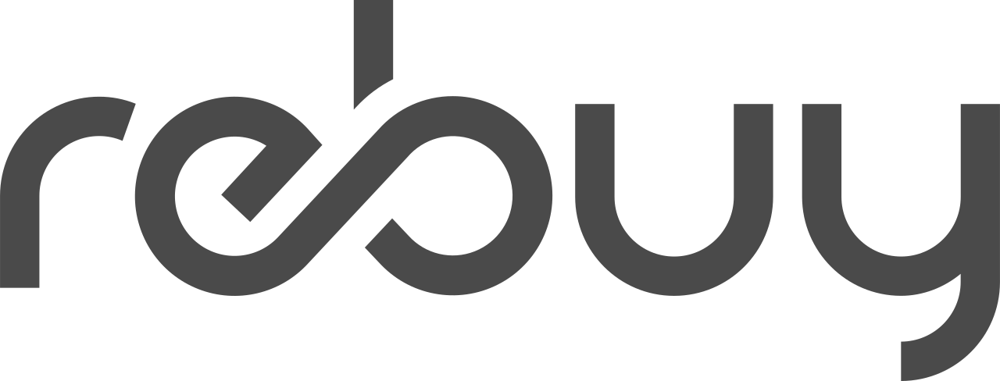

About me
I'm an experienced iOS Engineer with several years of experience in iOS development, I am skilled at bringing apps from concept to completion. I have a passion for creativity and enjoy automating the development process.
My coding style is clean, maintainable, and efficient, with a focus on adhering to SOLID principles and clean code practices. My extensive knowledge of testing methodologies, including UNIT, UI, and Snapshot testing, ensures that I develop high-quality and bug-free applications.
Soft skills and leadership
In addition, I have a strong background in mentoring and was a mentor in an internship program at Netcetera in 2022. I am always eager to help and grow those around me. My soft skills include being highly communicative, promoting transparent and open conversations with all team members, and delivering results. I am also consistently curious and strive to stay up-to-date with the latest technology stacks.
Documentation and Feedback: Committed to maintaining comprehensive and up-to-date documentation for all projects. I actively seek feedback to ensure clarity and accuracy, fostering a culture of knowledge sharing and continuous improvement.
Collaboration and Improvement: Regularly organize meetings with team members to discuss complex topics, gather insights, and explore improvement ideas. I advocate for pair programming to tackle challenging tasks more efficiently, fostering a collaborative environment that enhances productivity.
Work Experience

Rebuy recommerce gmbh - Berlin, DE (Remote)
2023 - present
Title: iOS Engineer
As a native iOS developer @rebuy, one of the most sustainable companies in Germany, I am excited to work on our iOS application and contribute to our mission of reducing waste and promoting environmental responsibility.

Netcetera AG, Skopje - Skopje, MKD (Remote)
2020 - 2022
Title: Software Engineer | Role: iOS Engineer
With the start of 2020 I shifted my primary focus to iOS Development. Worked on SDK for mobile banking.

Brainworks.Studio, Saratoga Springs - NY
2018 - 2018 | 4mon
Role: Web developer
During my bachelor studies I had the opportunity to be part of the students exchange program in United States. At that point of time I found a great local company and became web developer in Brainworks.Studio.
Projects
@rebuy
2023 - present
Project description: Our iOS native e-commerce app is a one-stop-shop for trading your consumer electronics and media, with two carts that allow you to buy and sell with ease. Our app is designed with cool and user interactive features, making it simple and enjoyable to use. Built on the Redux architecture, we use Swinject and SwinjectAutoregistration for injection, resulting in an efficient and streamlined development process. With 85% code coverage and numerous snapshot tests, we ensure a high level of quality and reliability. Our app utilizes the latest technologies such as SwiftUI and Combine, providing a cutting-edge user experience.
@ Netcetera
2020 - 2022
Project description: Digital banking solution to build a complex mobile wallet. Issuing accounts, cards, statements, transactions, block/unblock card, send money, Open Id Connect authentication, 3D Secure and much more.
- Developing new feature, and constant refactoring.
- Improving CI/CD on Jenkins with the help of Fastlane.
- Collaborated with architects, backend and Android to define feature requirements.
- Implemented OIDC(Open Id Connect) to enable user authentication via browser.
- Feature definition and estimation.
- Mentor to intern.
2021 - 2021 | 4mon
Project description: Integration app which usses the ToPay Mobile Wallet SDK
Private Projects
2022 - Present
Project description: WalletLess app is a simple app that can help you store all your loyalty cards in one place. This project was primarily written in SwiftUI.
Education

Faculty of Computer Science & Engineering
Skopje, Macedonia | 2016 - 2022
Title:
Graduated engineer in information sciences and computer engineering
Direction:
Application of information technologies
Dedicated to continuous professional development, I have completed multiple courses focused on iOS development and actively participated in various industry conferences, including iOSKonf. I also follow CocoaHeads members to stay updated on the latest trends and best practices, ensuring I bring innovative solutions to my work.
Technical Expertise
I have a deep understanding of iOS development with extensive experience in SwiftUI and app development from concept to delivery. My coding practices emphasize clean, maintainable, and efficient code, while focusing on SOLID principles and clean code methodologies.
- SwiftUI Best Practices & Design Systems: Expertise in creating scalable design systems with SwiftUI, ensuring consistency and modularity. I can develop standalone design system modules that can be easily imported and integrated into any iOS app.
- Swift Macros Development: Skilled in developing Swift Macros to enhance productivity and code efficiency, allowing developers to automate repetitive tasks and streamline code generation.
- A/B Testing and Feature Rollouts with Amplitude: Extensive experience with A/B testing, implementing controlled experiments using Amplitude to gather actionable insights. Additionally, proficient in leveraging feature flags for gradual rollouts of new features, enabling dynamic toggling of features based on performance metrics and user feedback, ensuring a smooth, data-driven release strategy.
- Authentication Systems: Implementation of secure login systems including Google Sign-In and Apple Sign-In.
- Sentry Integration: Experience with Sentry for proactive error tracking and resolution in production environments.
- Snapshot Testing: Employing snapshot testing to guarantee UI consistency and stability across releases.
- UI Testing: Proficient in writing UI tests with XCTest, including setting up BrowserStack for cross-device testing within CI pipelines. Experienced with Maestro for mobile UI testing, focusing on practical, efficient testing of both native and hybrid apps.
- Swinject Dependency Injection: Expert at using Swinject for decoupled dependency management and testability.
CI/CD Expertis
- Utilizing Bitrise for building, testing, and analyzing iOS applications.
- Setting up quality checks for pull requests to ensure code integrity.
- Implementing nightly jobs for beta releases, with automatic uploads to TestFlight if there are changes to the master branch within the last 24 hours.
- Integrating SonarCloud for code quality analysis.
- Automating the release process, including app version increment, code signing, and submission for review on App Store Connect with a single workflow.
- Managing beta releases as needed for testing on TestFlight.